🎯 목표와 완성 이미지
이 실습①에서는 단선(선로가 1개)인 역에서 열차 2대가 교행(엇갈려 지나감)하는, 가장 단순한 맵을 처음부터 끝까지 만듭니다. 시골 단선에서 상행·하행 열차가 역에서 서로 기다렸다가 자리를 바꾸는——바로 그 광경입니다.
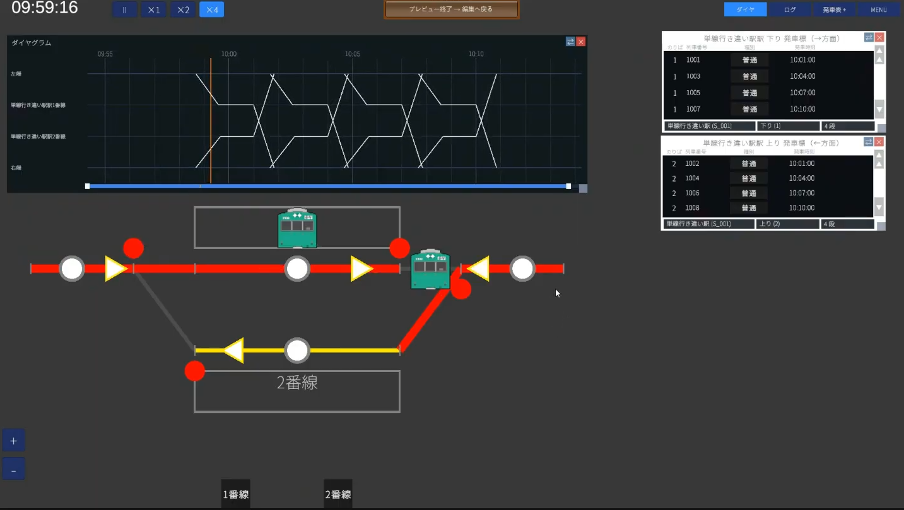
이 튜토리얼에서 배울 수 있는 것
- 맵의 신규 작성과 시나리오, 편집 진행 방법(회사→배선→설비→운행)
- 상대식 승강장(2면 2선) 역을 그리는 법
- 궤도 회로의 길이·제한 속도 설정
- 레버·진로·신호기·출발 버튼의 기본
- 경로 그룹과 열차 등록, 다이어그램 표시까지
✏️ 먼저 설계도를 그린다(가장 중요)
에디터를 만지기 전에 종이에 간단한 설계도를 그리는 것을 강력히 권장합니다. 바로 만들기 시작하면 나중에 「궤도 회로가 너무 짧아서 레버를 놓을 수 없다」 「순서를 잘못 설정해서 다시 해야 한다」 같은 되돌림 작업이 생기기 쉽습니다. 종이 위에서 선로·역·레버의 위치까지 정해 두면 작업이 일직선으로 진행됩니다.
이번에 만들 역의 구성은 이런 형태입니다. 이것이 이 튜토리얼 전체의 지도가 됩니다.
🏢 STEP1 회사(종별과 형식)
좌측 상단 메뉴는 파일 → 회사 → 배선 → 설비 → 운행 순서입니다. 이 순서대로 왼쪽부터 진행하면 되돌림 작업이 줄어듭니다. 먼저 회사부터.
1-1. 맵을 신규 작성한다
- 파일 → 새 맵 만들기. 맵 이름을 입력하고 만들기(실제 역 이름이 아니어도 OK. 여기서는
Passing으로 했습니다) - 이어서 시나리오 작성을 물어봅니다. 시나리오는 같은 맵에 아침·낮·밤 등 여러 시간대를 갖게 하는 구조입니다. 특별한 고집이 없으면 기본값(DayTime) 그대로, 알기 쉽게
Daytime등으로 해도 OK
1-2. 열차 종별을 「쓰는 것만」으로 좁힌다
회사 → 열차 종별. 기본으로 8종류가 준비되어 있지만, 이 맵에서 쓰는 것만 남기고 나머지는 지우는 것이 요령입니다. 이번 단선의 작은 역은 보통 전차만 정차하는 상정이므로, 「보통」과 회송 열차용으로 「회송」의 2가지만 남깁니다.
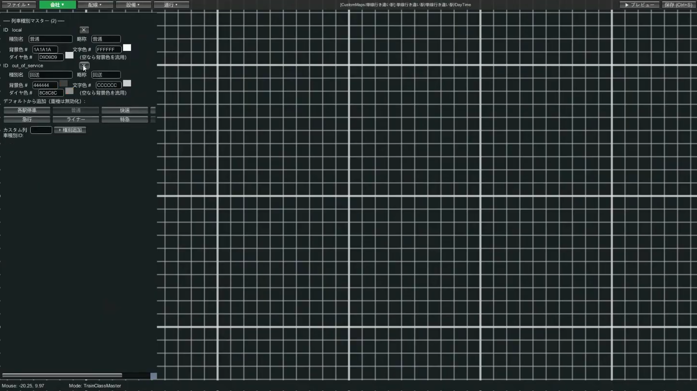
1-3. 열차 형식(차량)을 1개 만든다
회사 → 열차 형식에서 달리게 할 차량을 1개 정의합니다.
- 열차 형식 ID(예
1)와 닉네임(예Series 1)을 입력 - 량수(예 10량)와 전장(예 200m. 10량이면 약 200m)을 입력
- 아이콘은 「공식 뱅크를 사용」→ 통근형 등을 고르고, 원하는 색(예: 녹색)을 선택
- 저장
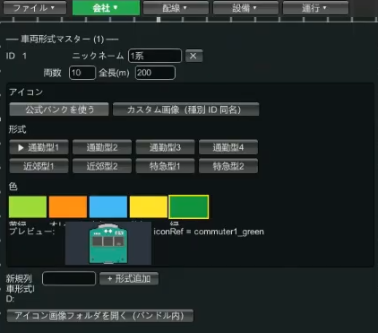
→ 자세한 내용은 회사 편집 가이드
🛤 STEP2 배선(선로와 역)
2-1. 역의 1번선·2번선을 긋는다(상대식 승강장)
배선 → 궤도 회로. 시작점을 클릭 → 끝점을 클릭으로 1개 그을 수 있습니다. 먼저 1번선을 1개, 이어서 조금 아래에 2번선을 1개. 2개의 선로는 최소한 4칸 정도 간격을 벌려 주세요(너무 가까우면 나중에 승강장이나 버튼 조작이 어려워집니다).
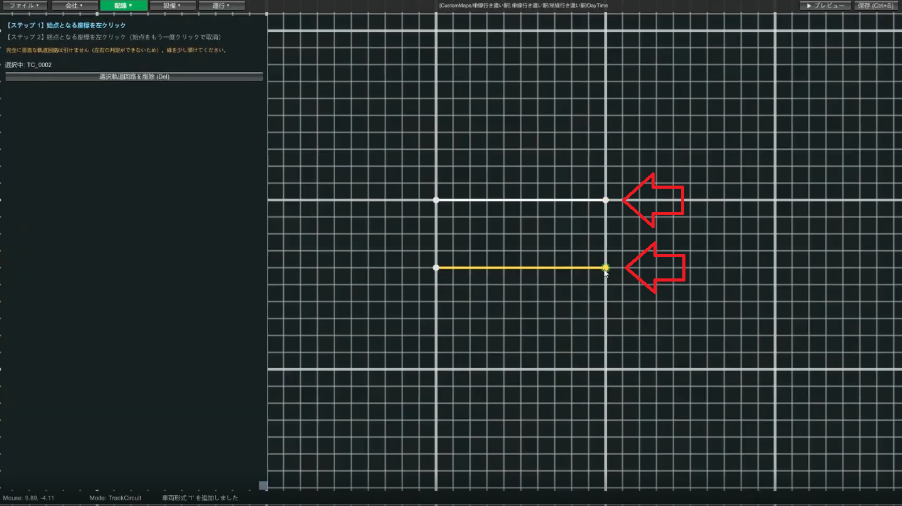
2-2. 역 양쪽에 분기기를 놓는다
배선 → 분기기. 종류는 편개를 사용합니다. 먼저 직진 방향부터 잇고, 1번선·2번선으로 갈라지는 분기기를 역 양끝에 하나씩 만들어 저장합니다.
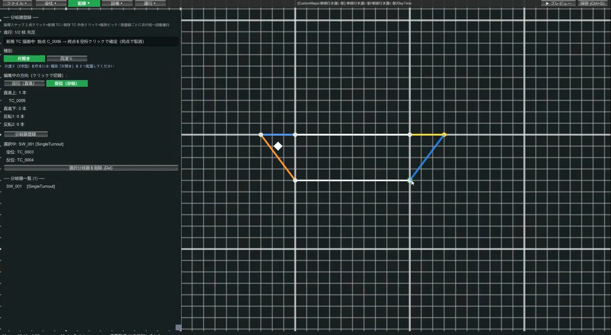
2-3. 역 바깥(단선부)의 궤도 회로를 긋는다
분기기 바깥쪽, 즉 역의 좌우로 뻗는 단선부의 궤도 회로를 좌우에 하나씩 긋습니다. 실제 철도에서는 역 사이에 여러 궤도 회로가 있지만, 이번에는 알기 쉬움을 우선해 하나씩으로 합니다.
여기까지 됐으면 일단 ▶ 미리보기로 선로가 제대로 그어졌는지 확인합니다. 수시로 미리보기 하는 것이 실패를 빨리 찾아내는 요령입니다.
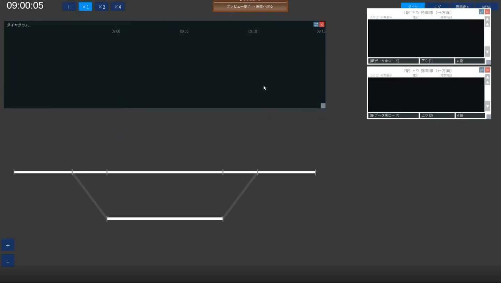
2-4. 궤도 회로의 길이와 제한 속도를 정한다(궤도 일괄)
배선 → 궤도 일괄(일괄 편집) 모드에서 궤도 회로의 길이와 제한 속도를 한꺼번에 설정합니다. 기본 길이(100m 등) 그대로면 200m 열차가 역에서 삐져나오므로, 여기는 제대로 정합니다.
| 장소 | 길이 기준 | 제한 속도 기준 |
|---|---|---|
| 역의 1번선·2번선 | 240m(200m 열차＋앞뒤 20m) | 80km/h |
| 분기기(직진 측) | 40m 등 짧게 | 80km/h |
| 분기기(분기 측) | 40m 등 짧게 | 40~45km/h(느리게) |
| 역 바깥의 단선부 | 600m 등 길게 | 80km/h |
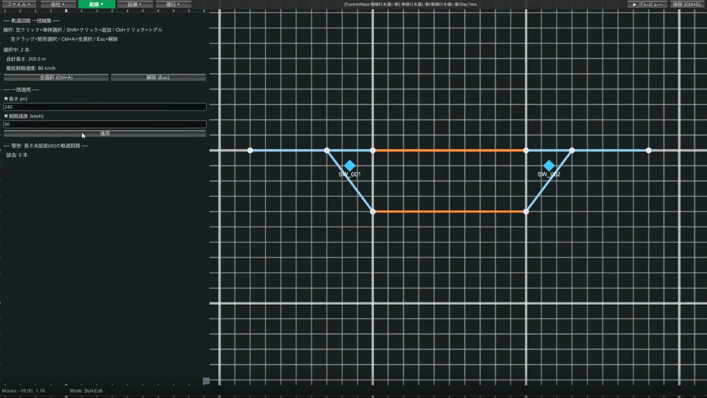
2-5. 역을 등록하고 번선을 할당한다
- 배선 → 역에서 열차가 서는 승강장의 궤도 회로(1번선·2번선)를 고른다
- 역명을 입력(예
Passing Station)하고 등록 - 번선 할당이 나오므로, 위쪽 궤도 회로(예
TC001)를 1번선, 아래쪽 궤도 회로(TC002)를 2번선으로 설정하고 업데이트를 누른다
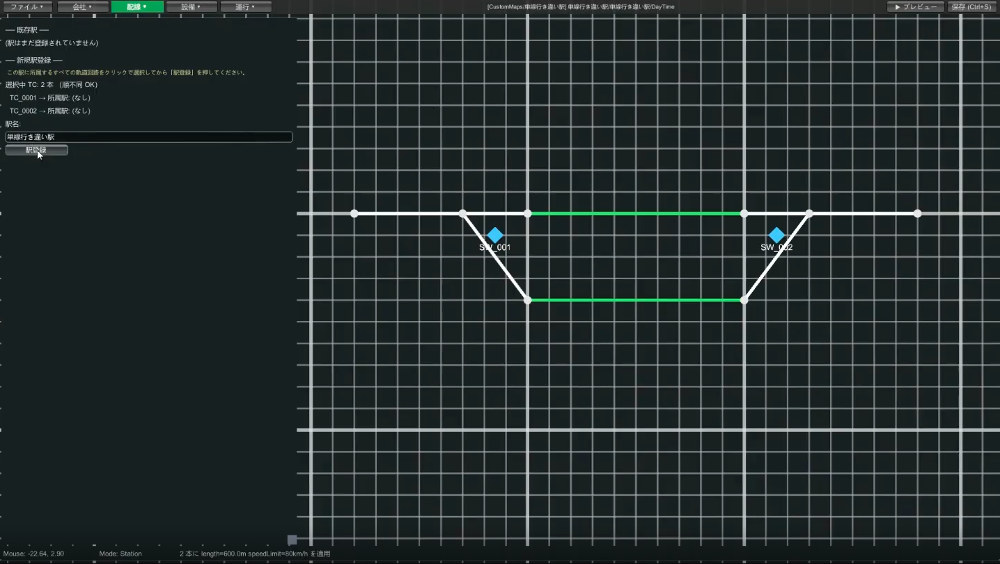
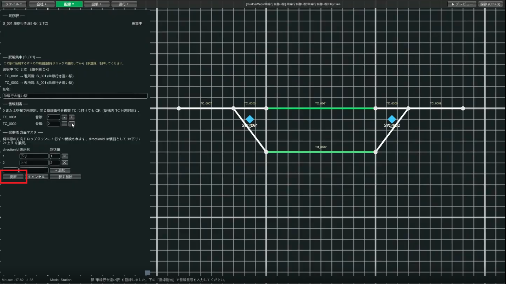
2-6. 승강장을 놓는다
배선 → 승강장. 승강장은 네 모서리를 클릭해서 사각형을 그립니다. 상대식이므로 1번선 궤도 회로의 위쪽과 2번선 궤도 회로의 아래쪽에 승강장을 놓습니다.
각 승강장에는 위 변·아래 변에 각각 번선명을 쓸 수 있습니다. 예를 들어 1번선 승강장은 궤도 회로의 위에 있으므로, 승강장의 아래쪽에 「1번선」이라고 넣습니다(선로에 면한 쪽에 번선명이 오는 이미지).
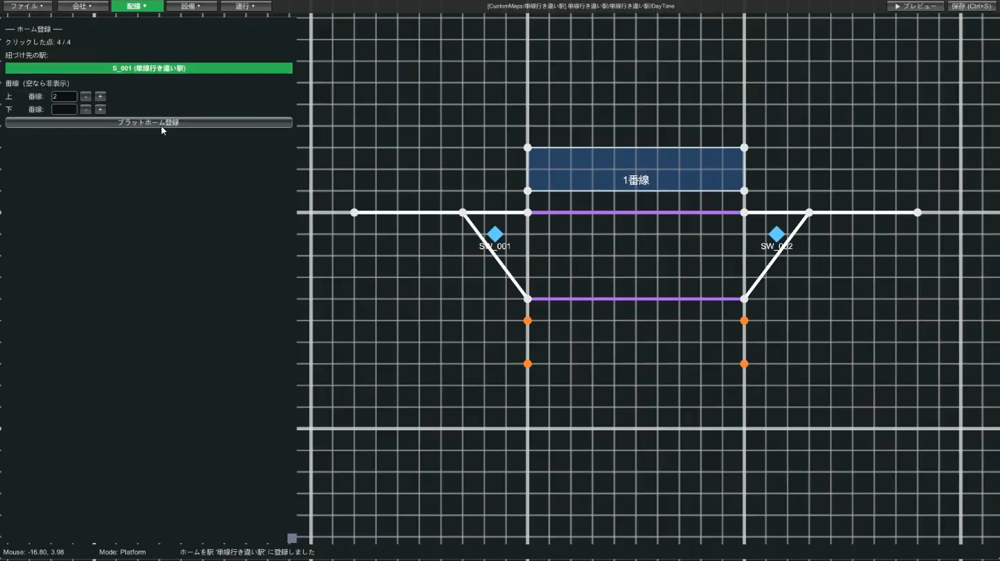
2번선 승강장도 같은 방식으로 놓았으면 ▶ 미리보기로 겉모습을 확인하고, Ctrl+S로 저장.
→ 자세한 내용은 배선 편집 가이드
🚦 STEP3 설비(레버·진로·신호·출발 버튼)
3-1. 먼저 「진로」를 생각한다
레버를 놓기 전에 어떤 진로(열차가 지나는 길)가 필요한지를 생각합니다. 이 역에서 필요한 것은 다음 4개.
- 1번선으로 들어가는 진로 / 1번선에서 나가는 진로
- 2번선으로 들어가는 진로 / 2번선에서 나가는 진로
진로는 「시점 레버(출발 측)」와 「종점 레버(목적지 측)」의 쌍으로 만드므로, 이 4개 진로 몫의 레버를 놓아 갑니다.
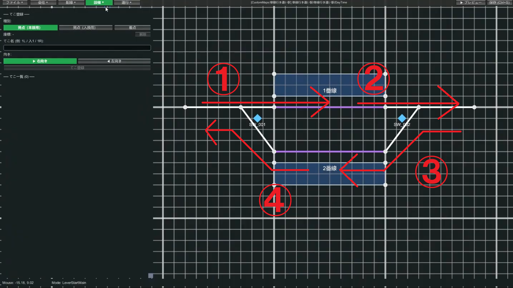
1, 2, 왼쪽으로 가는 것은 11, 12처럼 하면 정리됩니다.
3-2. 레버를 놓는다
설비 → 레버. 시점에는 「본선용」과 「입환용」이 있지만, 처음에는 본선용만으로 OK. 이번에는 오른쪽으로 가는 열차＝1번선, 왼쪽으로 가는 열차＝2번선으로 정했으므로, 다음과 같이 놓습니다.
| 진로 | 시점 레버(숫자) | 종점 레버(알파벳) |
|---|---|---|
| 1번선으로 들어가기 | 1 | A |
| 1번선에서 나가기 | 2 | B |
| 2번선으로 들어가기 | 11 | C |
| 2번선에서 나가기 | 12 | D |
레버의 방향(좌우)을 고르고, 이름을 넣고 좌표를 클릭→등록. 종점 레버는 진로가 끝나는 궤도 회로 위에 놓습니다.
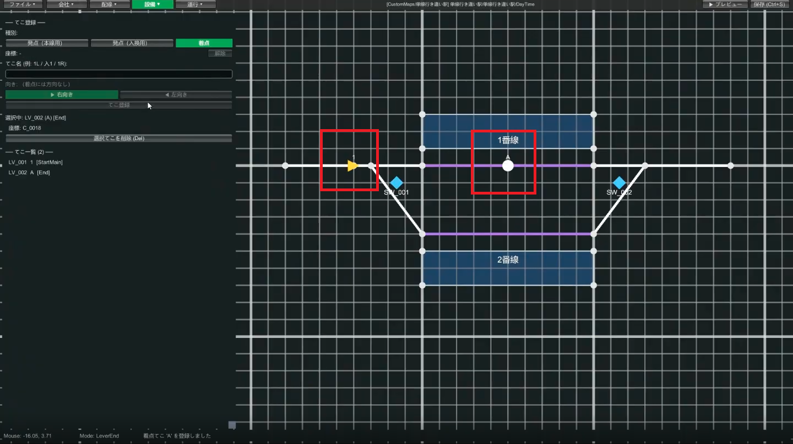
같은 요령으로 나머지 레버(2/B, 11/C, 12/D)도 놓아 갑니다. 다 놓았으면 미리보기로 확인.
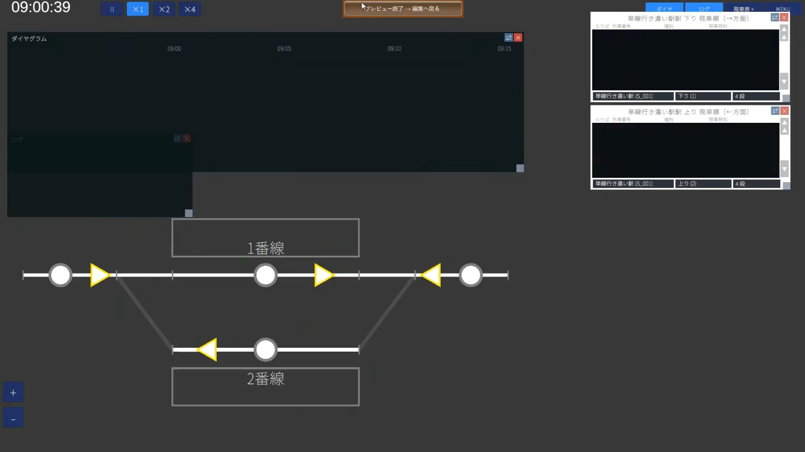
3-3. 진로를 등록한다
레버를 놓았으면 진로는 간단합니다. 설비 → 진로에서,
- 시점 레버를 클릭 → 종점 레버를 클릭(예: 1 → A로 진로
1A) - 경유하는 궤도 회로를 순서대로 클릭(예: 분기의 직진 측 → 1번선의 궤도 회로)
- (임의·상급) 접근 쇄정의 궤도 회로를 지정(다음 항목)
- 등록. 진로명은 시점＋종점으로 자동 명명(
1A등)
진로로 이어 붙인 궤도 회로는, 그 진로를 지키는 신호기(장내·출발·입환)가 「여기서부터 앞은 내 관리 범위」라고 선언하는 구간이 됩니다. 신호기는 관리 범위 안에 열차가 재선해 있는 동안은 적색을 나타내며, 열차를 진입시키지 않습니다.
이 때문에 시점 레버·신호기가 놓인 궤도 회로는 진로에 포함하지 않습니다. 포함해 버리면, 열차가 레버·신호기 위치에 도달한 순간 신호기가 자기 자신을 지켜 적색이 되고, 열차가 그 자리에서 오도 가도 못하게 됩니다.
시점 레버와 신호기를 어디에 놓느냐에 따라 진로에 포함해야 할 궤도 회로의 범위가 바뀝니다. 배선 시에 「여기 궤도 회로에서 신호를 다룬다」고 정하고, 레버와 신호기를 그 앞쪽(가까운 쪽)에, 진로의 이어 붙이기를 그 앞(먼 쪽)부터 시작하는 것이 기본형이 됩니다.
실례: 궤도 회로 TC_A → TC_B → TC_C로 늘어서 있고, TC_A에 시점 레버를 놓고, TC_A와 TC_B의 경계에 장내 신호기를 놓고, TC_C에 종점 레버를 놓는 경우, 진로에는 TC_B, TC_C를 이어 붙입니다. TC_A는 진로에 포함하지 않습니다. 종점 레버가 있는 TC_C는 진로에 포함합니다(종점 레버는 진로의 종단을 나타내는 표시이며, 그 궤도 회로는 진로 범위의 안쪽입니다).
TC_A는 진로에 포함하지 않고, 장내 신호기 앞의 TC_B부터 종점 레버가 있는 TC_C까지를 진로로 이어 붙인다.3-4.（임의·상급）접근 쇄정을 설정한다
진로 등록 시에 「접근 쇄정의 궤도 회로」를 고르면, 그 궤도 회로에 열차가 있는 동안은 그 진로를 멋대로 해제할 수 없게 됩니다. 보통은 시점 레버가 있는(신호기 바로 앞의) 궤도 회로를 지정합니다. 자세한 내용은 용어집 「접근 쇄정」도 참조.
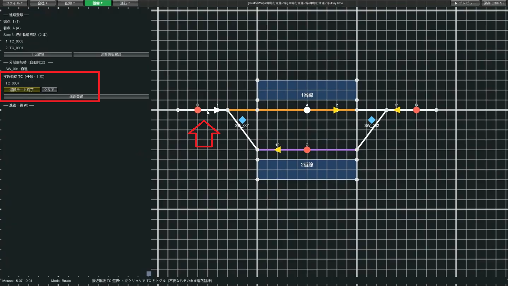
4개의 진로(1A·2B·11C·12D)를 같은 요령으로 등록했으면, 미리보기에서 레버를 조작해 분기가 제대로 전환되는 것을 확인합니다.
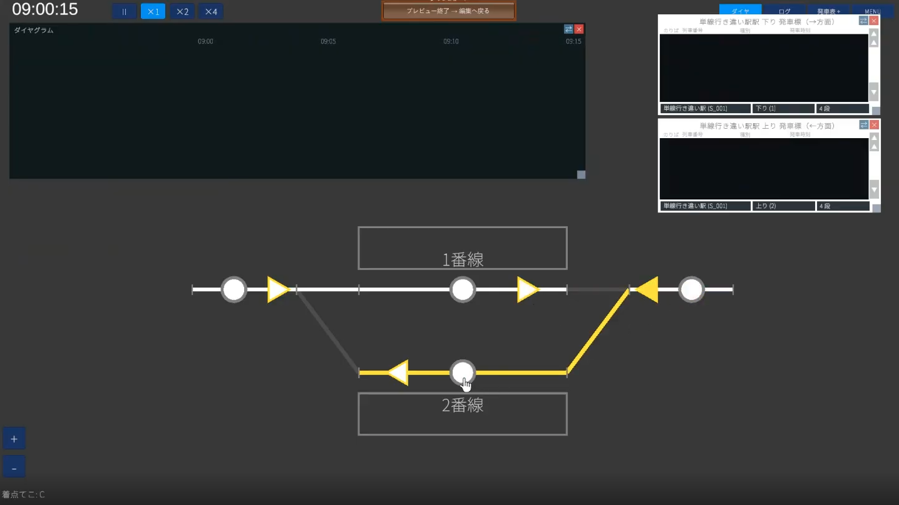
3-5. 신호기를 놓는다
설비 → 신호기. 신호기는 진로와 세트로, 진로 1개당 신호기 1개를 놓습니다. 열차가 도착하는 쪽이 장내 신호기, 출발하는 쪽이 출발 신호기입니다(구조는 같습니다).
- 신호기 모드에서 종류(장내 / 출발)를 고르고, 맵 위의 좌표를 클릭
- 시점 레버와 종점 레버를 클릭해 담당 진로를 지정(예: 1 → A로
1A의 신호기) - 신호기 등록
4개 진로 몫(장내: 1A·11C, 출발: 2B·12D)을 놓아 갑니다.
3-6.（임의·상급）황색 신호를 낼 수 있게 한다
신호기를 클릭해 편집 모드에 들어가, 「OR 조건을 추가」→ 다음 신호기(예: 1A의 앞은 2B)가 적색임을 지정하고 저장. 이것으로 앞이 적색이면 이쪽은 황색, 다시 그 앞이 청색이면 이쪽도 청색, 이라는 현실적인 3색 현시가 됩니다.
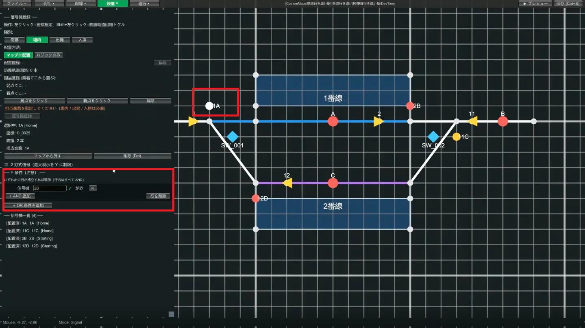
3-7. 출발 버튼을 놓는다
- 설비 → 출발 버튼. 좌표를 클릭해 배치
- 담당할 역과 발차음(벨 / 부저)을 골라 버튼 등록
- 1번선·2번선 양쪽에 놓으면 설비는 완성
→ 자세한 내용은 설비 편집 가이드
📋 STEP4 운행(다이어를 짠다)
운행 카테고리는 시나리오를 선택하고 있을 때만 쓸 수 있습니다. 경로 그룹 → 열차 → 다이어그램 순서로 진행합니다.
4-1. 경로 그룹을 만든다
경로 그룹은 「열차가 지나는 길의 템플릿」입니다. 열차 1대씩 쓰면 힘드므로, 루트를 그룹으로 묶어 돌려씁니다. 먼저 오른쪽으로 가기(1번선으로 들어가서 나가기)의 그룹을 만듭니다.
- 운행 → 경로 그룹. 경로 그룹 ID(예
Track 1 arrival)를 입력 - 방향(오른쪽 / 왼쪽)을 고른다. 오른쪽으로 가므로 「오른쪽」
- 출현 TC＝열차가 나타나는 궤도 회로(좌단의 단선 TC)를 고른다. 출현 오프셋은 역 정차 몇 초 전에 낼지(예 80초)
- 행선 안내판은 「자동(방향에 따라 결정)」으로 OK
- 스텝을 순서대로 등록: 진로
1A의 궤도 회로를 좌클릭 → 서는 1번선의 궤도 회로를 Shift+좌클릭(역 정차) → 출발하는 진로2B의 궤도 회로를 좌클릭 - 3스텝 등록했으면 등록
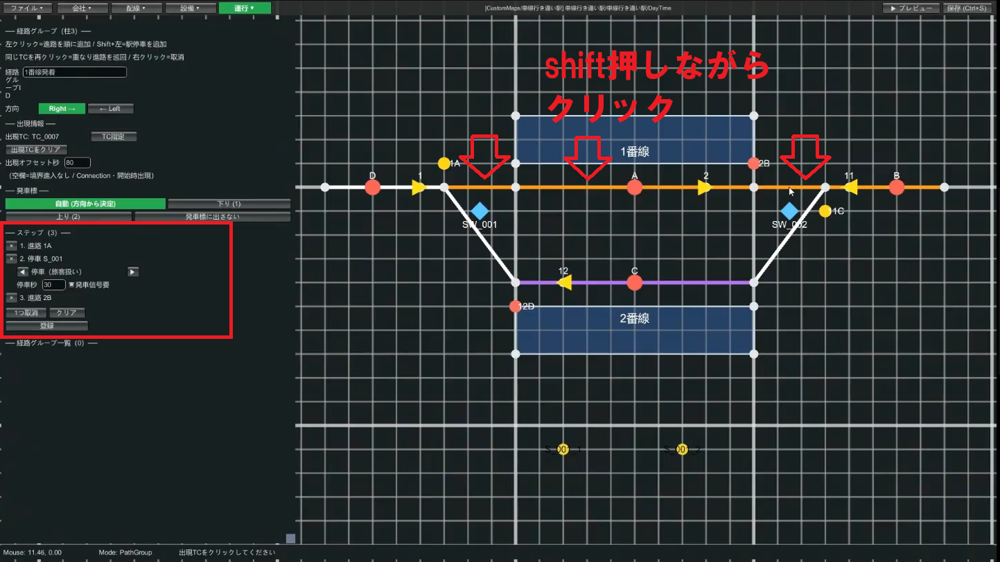
같은 요령으로 왼쪽으로 가기(2번선)의 그룹도 만듭니다(ID 예 Track 2 departure, 방향 「왼쪽」, 출현 TC는 우단의 단선 TC, 스텝은 11C → 2번선 정차 → 12D).
4-2. 열차를 등록한다
운행 → 열차 목록에서 달리게 할 열차를 등록합니다. 교행시키므로 2대 만듭니다.
| 항목 | 1대째 | 2대째 |
|---|---|---|
| 열차 번호 | 1001 | 1002 |
| 열차 형식 | Series 1 | Series 1 |
| 열차 종별 | 보통 | 보통 |
| 경로 그룹 | Track 1 arrival(오른쪽으로 가기) | Track 2 departure(왼쪽으로 가기) |
| 도착 시각 | 10:00 | 10:00 |
| 발차 시각 | 10:01 | 10:01 |
같은 시각에 도착·발차시키면, 2대가 역에서 교행합니다. 저장했으면 ▶ 미리보기로, 행선 안내판에 열차가 나오고 실제로 출현·발차하는지 확인합시다(출발 버튼도 눌러 본다).
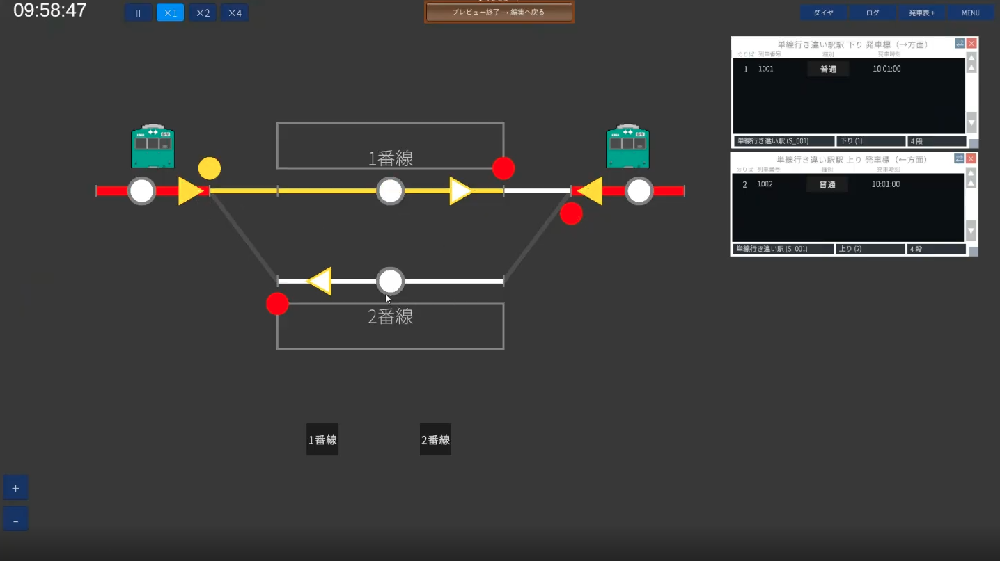
4-3. 다이어그램을 표시한다(임의)
여기까지로 열차는 움직입니다. 마지막으로 다이어그램(시각×위치 그래프)을 표시하는 설정입니다. 어려우면 건너뛰어도 OK.
운행 → 다이어그램에서 그래프의 세로축에 늘어서는 행을 위에서부터 순서대로 등록합니다.
- 좌단(맵 끝): 종류 「맵 끝」, 표시명(예
Left end), 대응하는 궤도 회로를 고른다 - 역의 1번선·2번선: 종류 「역 번선」, 역과 번선을 골라 등록
- 우단(맵 끝): 좌단과 동일하게
좌단 → 1번선 → 2번선 → 우단처럼 끝을 처음과 마지막에, 역의 번선을 한가운데에 늘어놓으면 다이어가 그려집니다.
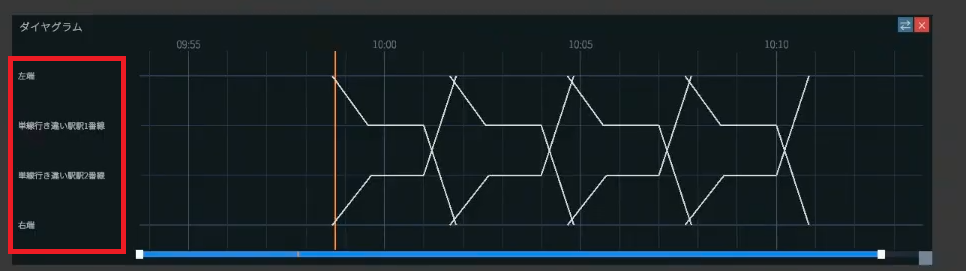
4-4. 열차를 늘린다(복사)
1대 만들었으면 운행 → 열차 목록의 복사로 비슷한 열차를 양산할 수 있습니다. 열차 번호와 시각만 바꾸면 OK.
→ 자세한 내용은 운행 편집 가이드
🎉 완성! 다음 레벨로
수고하셨습니다. 이것으로 단선에서 열차 2대가 교행하는 자작 맵의 기본을 한 바퀴 돌았습니다. 회사→배선→설비→운행이라는 흐름과, 레버·진로·신호의 관계를 파악했다면 대성공입니다.
잘 움직이지 않을 때는
- 저장 시의 메시지를 읽는다: 「진로가 궤도 회로를 참조하지 않았다」 등의 경고는 부족한 설정을 알려주고 있습니다
- 수시로 미리보기: 1~2대씩 확인하면 출현 TC의 방향 착오나 스텝 순서 실수를 바로 알아챌 수 있습니다
- 레버를 놓을 수 없다: 궤도 회로가 너무 짧다는 신호. 길게(3~5칸) 다시 긋는다
- 열차가 막힌다: 단선에서 간격이 너무 가깝지 않은지 확인